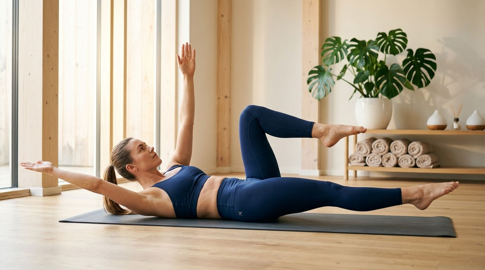
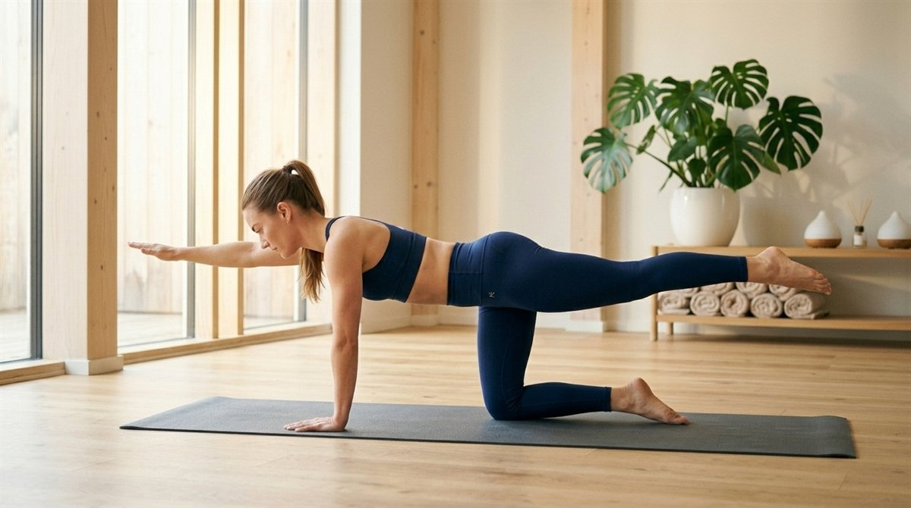
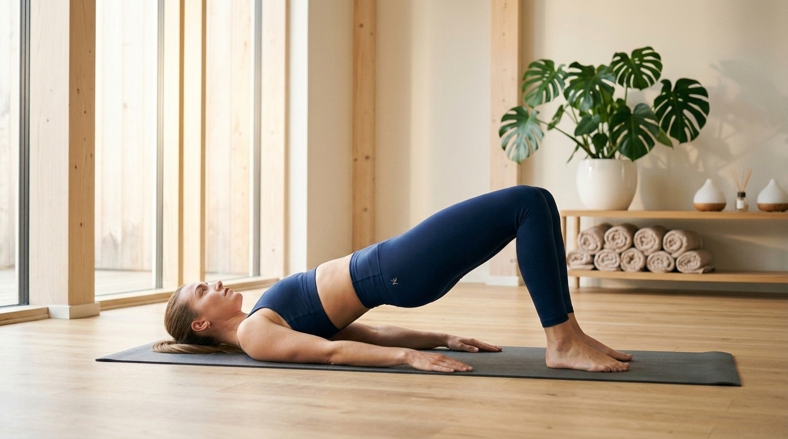
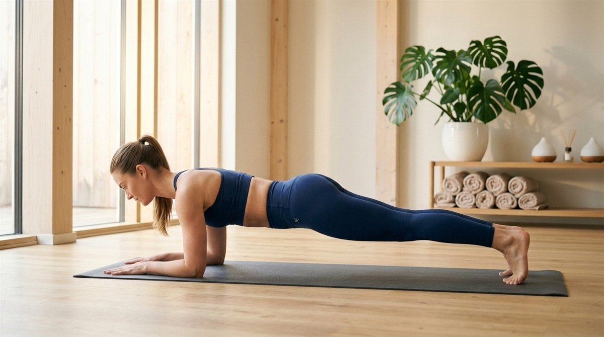

오랜 좌식 생활과 스마트폰 사용으로 만성 허리 통증(요통)과 굽은 등, 골반 비대칭을 호소하는 현대인들에게 인체의 중심 기둥을 바로 세우는 코어(Core) 운동은 선택이 아닌 필수입니다.
하지만 겉으로 보이는 식스팩(복직근)만 쥐어짜는 무리한 윗몸일으키기는 오히려 척추 디스크에 심각한 압박을 가할 수 있습니다. 척추를 단단한 코르셋처럼 감싸 보호하는 심부 코어 근육(복횡근, 다열근, 골반저근)을 안전하게 활성화하여 허리 통증을 근본적으로 없애는 하루 10분 4대 무통 코어 운동 루틴과 비교 분석표, FAQ를 완벽 정리해 드립니다.
코어(Core)는 단순히 복근만을 의미하지 않습니다. 횡격막(위), 골반저근(아래), 복횡근(앞·옆), 다열근(뒤)으로 이루어진 '인체 내부의 천연 복대 시스템'을 뜻합니다.
전통적인 윗몸일으키기(Sit-up)나 크런치는 척추를 강하게 구부리며 요추 디스크에 약 330kg 이상의 압박 부하를 주어 허리 통증을 악화시키는 주요 원인이 됩니다. 반면 현대 재활의학의 거두인 스튜어트 맥길(Stuart McGill) 교수가 입증한 '안정화 중심 코어 운동'은 척추를 중립 상태로 고정한 채 심부 근육만을 등척성으로 수축시켜, 디스크 손상 없이 척추 지지력을 극대화합니다.
2. 허리 통증 없이 안전한 4대 무통 코어 운동법
매트 하나만 있으면 층간소음 없이 거실에서 안전하게 수행할 수 있는 대표적인 4대 코어 루틴입니다.
1) 데드버그 (Dead Bug) - 복횡근 활성화의 끝판왕
자세
등을 바닥에 대고 누워 무릎을 90도로 들고 양팔을 천장으로 뻗습니다.
동작
허리가 바닥에서 뜨지 않도록 배꼽을 바닥으로 누르며, 오른팔과 왼다리를 대각선으로 천천히 내렸다가 돌아옵니다.
포인트
허리가 바닥에서 뜨는 순간 동작 범위를 멈추고 복압을 유지합니다.

허리를 바닥에 밀착하고 대각선 팔다리를 교차 뻗는 데드버그 자세
2) 버드독 (Bird Dog) - 척추 기립근 & 대각선 사슬 강화
자세
손목은 어깨 아래, 무릎은 골반 아래에 두는 네발기기 자세를 취합니다.
동작
골반이 좌우로 틀어지지 않도록 고정한 상태에서 오른팔과 왼다리를 바닥과 수평이 되도록 뻗어 2초간 정지합니다.
포인트
다리를 너무 높이 들어 허리가 꺾이지 않도록 몸통을 일자로 유지합니다.

네발기기 자세에서 몸통 수평 정렬을 유지하며 등과 둔근을 강화하는 버드독 자세
3) 글루트 브릿지 (Glute Bridge) - 둔근 강화 & 골반 교정
자세
무릎을 세우고 누워 발을 골반 너비로 벌립니다.
동작
발뒤꿈치로 바닥을 밀며 엉덩이를 천장으로 들어 올려 어깨부터 무릎까지 일직선을 만듭니다.
포인트
허리 힘이 아닌 엉덩이(둔근)를 강하게 쥐어짜는 힘으로 들어 올립니다.

둔근을 쥐어짜며 엉덩이와 척추를 일직선으로 들어 올리는 글루트 브릿지 자세
4) 엘보우 플랭크 (Elbow Plank) - 전신 등척성 코어 단련
자세
팔꿈치를 어깨너비로 대고 엎드려 발끝으로 몸을 지탱합니다.
동작
턱을 당기고 정수리부터 발뒤꿈치까지 일직선을 만든 상태에서 복부와 엉덩이에 힘을 줍니다.
포인트
버티는 시간보다 골반이 아래로 처지거나 위로 솟지 않는 바른 정렬이 우선입니다.

정수리부터 발끝까지 일직선을 유지하며 전신 심부 코어를 단련하는 엘보우 플랭크 자세
3. 초보자를 위한 하루 10분 홈트 루틴 시간표
과도한 세트 수보다 정확한 복압 유지가 핵심입니다. 매일 저녁 10분씩 2라운드로 진행하는 표준 시간표입니다.